シリンダヘツドASSY オーバーホール（脱着·分解） |
| 1. バルブ リフタ取りはずし |
| 2. オイルコントロールバルブ フィルタ取りはずし |
ヘキサゴンレンチ８を使用して、ウィズヘッドテーパスクリュプラグＮｏ．２を取りはずす。
| 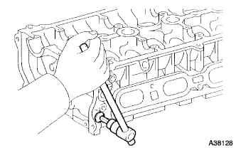 |
オイルコントロールバルブフィルタおよびガスケットを取りはずす。
| 3. インテーク バルブ取りはずし |
| 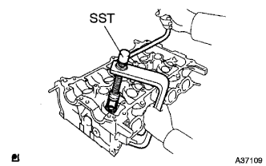 |
ＳＳＴを使用してリテーナロックをはずし、リテーナ、コンプレッションスプリングおよびバルブを取りはずす。
| 4. エキゾースト バルブ取りはずし |
ＳＳＴを使用してリテーナロックをはずし、リテーナ、コンプレッションスプリングおよびバルブを取りはずす。
| 5. バルブステムオイル シール OR Oリング取りはずし |
ニードルノーズプライヤーを使用して、オイルシールを取りはずす。
| 6. バルブスプリング シート取りはずし |
| 7. ユニオン取りはずし |
| 8. スタッドボルト取りはずし |
トルクスソケットレンチを使用して、スタッドボルトを取りはずす。
| 9. カムシャフトベアリングキャップセッティング リング ピン取りはずし |
| 10. シリンダヘツドひずみ点検 |
| 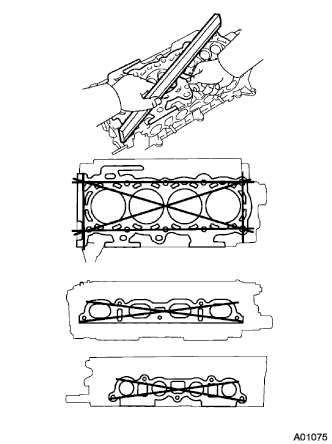 |
直定規およびシックネスゲージを使用して、シリンダヘッド下面およびマニホルド取り付け面のひずみを測定する。
| 11. シリンダヘツド亀裂点検 |
 |
染色浸透性探傷法（レッドチェック）により、シリンダヘッドに亀裂のないことを確認する。
| 12. インテーク バルブ点検 |
| 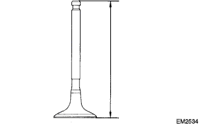 |
ノギスを使用して、全長を測定する。
| 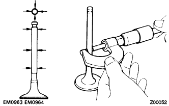 |
マイクロメーターを使用して、ステム部の外径を測定する。
| 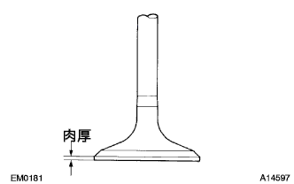 |
ノギスを使用して、バルブヘッド部の肉厚を測定する。
| 13. エキゾースト バルブ点検 |
ノギスを使用して、全長を測定する。
マイクロメーターを使用して、ステム部の外径を測定する。
ノギスを使用して、バルブヘッド部の肉厚を測定する。
| 14. アウタ コンプレッション スプリング点検 |
| 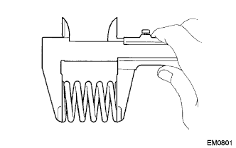 |
ノギスを使用して、自由長を測定する。
| 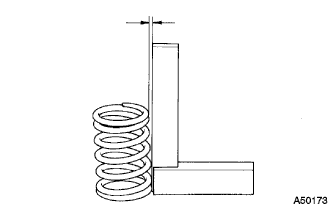 |
直角定規を使用して、直角度を測定する。
| 15. バルブガイドブツシユ オイルクリアランス点検 |
キャリパーゲージを使用して、バルブガイドブッシュの内径を測定する。
 |
バルブガイドブッシュ内径とバルブステム部外径からオイルクリアランスを算出する。
| 16. インテークバルブガイド ブシュ取りはずし |
| 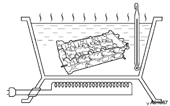 |
シリンダヘッドを８０－１００°Cに暖める。
| 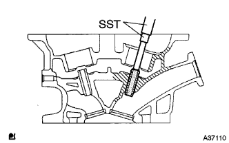 |
ＳＳＴを使用して、バルブガイドブッシュを燃焼室側へ打ち抜く。
| 17. エキゾーストバルブガイド ブシュ取りはずし |
シリンダヘッドを８０－１００°Cに暖める。
ＳＳＴを使用して、バルブガイドブッシュを燃焼室側へ打ち抜く。
| 18. インテークバルブガイド ブシュ取り付け |
キャリパーゲージを使用して、シリンダヘッドのブッシュ取り付け穴内径を測定する。
| ブッシュ取り付け穴 | ブッシュサイズ |
|---|---|
| ９．６８５－９．７０６ｍｍ | ＳＴＤ |
| ９．７３５－９．７５５ｍｍ | Ｏ／Ｓ |
 |
シリンダヘッドを８０－１００°Cに暖める。
| 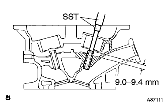 |
ＳＳＴを使用して、新品のバルブガイドブッシュを基準突き出し量まで打ち込む。
| 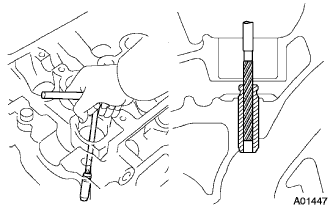 |
ハンドリーマーを使用して、バルブガイドブッシュ内径を研磨し、オイルクリアランス基準値にする。
| 19. エキゾーストバルブガイド ブシュ取り付け |
キャリパーゲージを使用して、シリンダヘッドのブッシュ取り付け穴内径を測定する。
| ブッシュ取り付け穴 | ブッシュサイズ |
|---|---|
| ９．６８５－９．７０６ｍｍ | ＳＴＤ |
| ９．７３５－９．７５５ｍｍ | Ｏ／Ｓ |
シリンダヘッドを８０－１００°Cに暖める。
ＳＳＴを使用して、新品のバルブガイドブッシュを基準突き出し量まで打ち込む。
ハンドリーマーを使用して、バルブガイドブッシュ内径を研磨し、オイルクリアランスを基準値にする。
| 20. バルブシート点検 |
バルブフェイスに光明丹を薄く塗布する。
バルブをバルブシートに軽く押し付ける。
バルブフェイスおよびバルブシートの当たり位置を点検する。
バルブフェイス全周にわたって当たりが均等にない場合は、バルブを交換する。
バルブシート全周にわたって当たりが均等にない場合は、バルブシートを修正する。
| 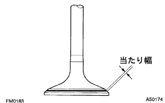 |
バルブシートの当たりが全周にわたって中央で当たり幅が１．０－１．４ｍｍであることを確認する。
| 21. インテークバルブ シート修正 |
| 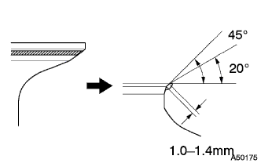 |
シートの当たり面が高い場合は、２０°および４５°のカッターヘッドを使用して修正する。
| 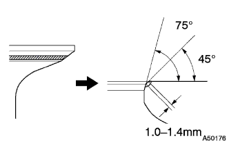 |
シートの当たり面が低い場合は、４５°および７５°のカッターヘッドを使用して修正する。
コンパウンドを使用してバルブのすり合わせを行う。
すり合わせ後、バルブの当たり面を点検する。
| 22. エキゾーストバルブ シート修正 |
シートの当たり面が高い場合は、２０°および４５°のカッターヘッドを使用して修正する。
シートの当たり面が低い場合は、４５°および７５°のカッターヘッドを使用して修正する。
コンパウンドを使用してバルブのすり合わせを行う。
すり合わせ後、バルブの当たり面を点検する。
| 23. バルブ リフタ点検 |
| 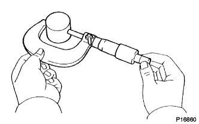 |
マイクロメーターを使用して、バルブリフタの外径を測定する。
| 24. バルブリフタオイルクリアランス点検 |
キャリパーゲージを使用して、シリンダヘッドのリフタ穴内径を測定する。
| 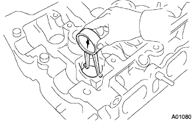 |
バルブリフタ外径とリフタ穴内径からオイルクリアランスを算出する。
| 25. カムシャフト点検 |
カムシャフト振れ点検
カムシャフトをＶブロックにセットする。
| 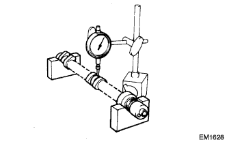 |
ダイヤルゲージを使用して、カムシャフトの振れを測定する。
カム高さ点検
| 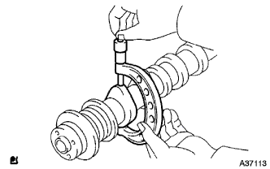 |
マイクロメーターを使用して、カム高さを測定する。
カムシャフトジャーナル点検
| 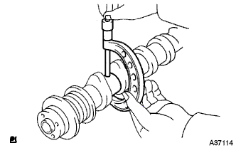 |
マイクロメーターを使用して、ジャーナル部外径を測定する。
| 26. カムシャフト NO.2点検 |
カムシャフト振れ点検
カムシャフトをＶブロックにセットする。
ダイアルゲージを使用して、カムシャフトの振れを測定する。
カム高さ点検
マイクロメーターを使用して、カム高さを測定する。
カムシャフトジャーナル点検
マイクロメーターを使用して、ジャーナル部外径を測定する。
| 27. カムシャフトスラストクリアランス点検 |
カムシャフトおよびカムシャフトＮｏ．２をシリンダヘッドに取り付ける。
| 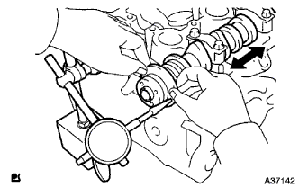 |
ダイヤルゲージを使用して、各カムシャフトのスラストクリアランスを測定する。
| 28. カムシャフトオイルクリアランス点検 |
カムシャフトおよびベアリングキャップを清掃する。
カムシャフトをシリンダヘッドにセットする。
| 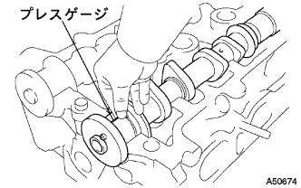 |
プレスゲージをカムシャフトジャーナルの軸方向にセットする。
カムシャフトベアリングキャップを取り付ける。
ベアリングキャップを取りはずす。
| 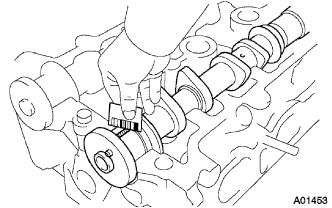 |
プレスゲージの最も幅の広い部分を測定する。
| 29. カムシャフトベアリングキャップセッティング リング ピン取り付け |
| 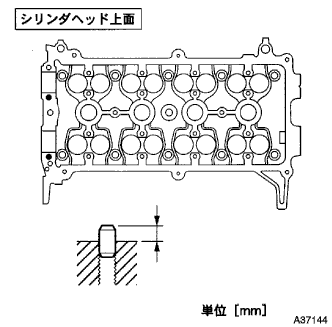 |
プラスチックハンマーを使用して、リングピンを基準突き出し量まで打ち込む。
| 30. スタッドボルト取り付け |
トルクスソケットレンチを使用して、スタッドボルトを取り付ける。
| 31. ユニオン取り付け |
| 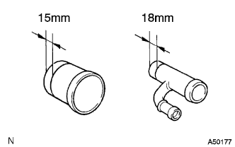 |
ペイントなどを使用して、図の位置に線を引く。
| 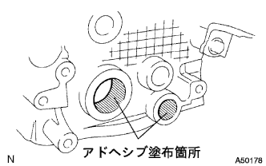 |
シリンダヘッドの取り付け穴内周にアドヘシブ１３２４を塗布する。
| 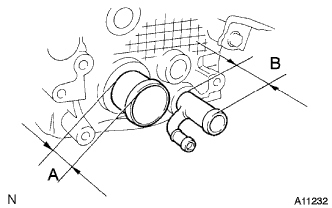 |
プレスなどを使用して、線の位置までユニオンを圧入する。
| ユニオン | 突き出し量 |
|---|---|
| A | 29mm |
| B | 44mm |
| 32. バルブステムオイル シール OR Oリング取り付け |
| 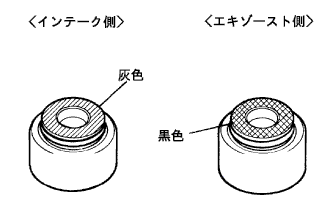 |
新品のオイルシールのリップ部に少量のエンジンオイルを塗布する。
| 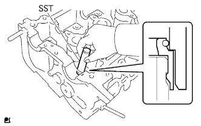 |
ＳＳＴを使用して、オイルシールを取り付ける。
| 33. インテーク バルブ取り付け |
| 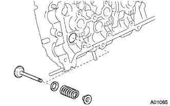 |
バルブ、バルブスプリングシート、スプリングおよびリテーナを取り付ける。
ＳＳＴを使用して、リテーナロックを取り付ける。
| 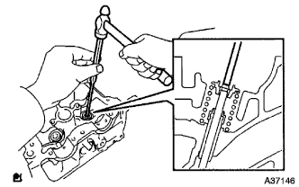 |
ピンポンチ（５ｍｍ）を使用して、バルブチップ部をたたき、バルブスプリングを落ち着かせる。
| 34. エキゾースト バルブ取り付け |
バルブ、バルブスプリングシート、スプリングおよびリテーナを取り付ける。
ＳＳＴを使用して、リテーナロックを取り付ける。
ピンポンチ（５ｍｍ）を使用して、バルブチップ部をたたき、バルブスプリングを落ち着かせる。
| 35. オイルコントロールバルブ フィルタ取り付け |
メッシュ部に異物等の付着がないことを確認する。
| 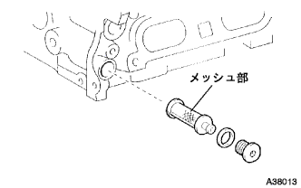 |
ヘキサゴンレンチ８を使用して、新品のガスケットを介してウィズヘッドテーパスクリュプラグＮｏ．２を取り付ける。
| 36. バルブ リフタ取り付け |
バルブリフタに少量のエンジンオイルを塗布する。
バルブリフタをシリンダヘッドに取り付ける。
バルブリフタがスムースに回転することを確認する。